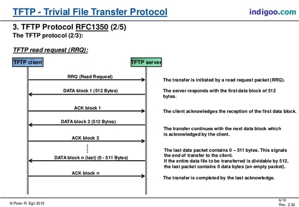
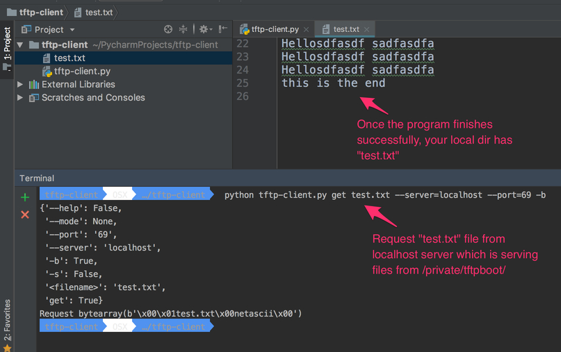

Understanding TFTP protocol and write TFTP client in Python
Hello Pythonistas, TFTP [ Trivial File Transfer Protocol ] is a light weight file transfer protocol, there is really not much to it as seen in the above picture. Its a UDP [ User datagram protocol ] protocol. There are connection oriented and connectionless protocols and TFTP falls under the later category.
Without getting into too much of technical details , lets see how the protocol plays in action. On my mac i have set up TFTP server and there is builtin tftp client
env OSX …/CLIENT tftp
tftp> ?
Commands may be abbreviated. Commands are:
connect connect to remote tftp
mode set file transfer mode
put send file
get receive file
quit exit tftp
verbose toggle verbose mode
blksize set an alternative blocksize (def. 512)
tsize toggle extended tsize option
trace toggle packet tracing
status show current status
binary set mode to octet
ascii set mode to netascii
rexmt set per-packet retransmission timeout
timeout set total retransmission timeout
tout toggle extended timeout option
? print help information
tftp> connect localhost
tftp> trace
Packet tracing on.
tftp> status
Connected to localhost.
Mode: netascii Verbose: off Tracing: on
Rexmt-interval: 5 seconds, Max-timeout: 25 seconds
tftp> get test.txt test.txt
sent RRQ <file=test.txt, mode=netascii>
received DATA <block=1, 512 bytes>
sent ACK <block=1>
received DATA <block=2, 64 bytes>
Received 576 bytes in 0.0 seconds
Protocol in action summary:
As shown above the protocol can be seen in action on the last 6 lines or so.
- Client sends a Read Request specifying a file and mode. [ We can see opcodes for that in RFC ]
- Server responds with block of data along with block number.
- Client sends an ACK for the received block
- Server sends next data with incremented block number and ……
- Normal Termination - This excerpt is taken directly from RFC 1350
The end of a transfer is marked by a DATA packet that contains between 0 and 511 bytes of data (i.e., Datagram length < 516). This packet is acknowledged by an ACK packet like all other DATA packets. The host acknowledging the final DATA packet may terminate its side of the connection on sending the final ACK.
Opcode Operation 1 Read request (RRQ) 2 Write request (WRQ) 3 Data (DATA) 4 Acknowledgment (ACK) 5 Error (ERROR)
How to start TFTP server on Mac ?
sudo launchctl load -F /System/Library/LaunchDaemons/tftp.plist
sudo launchctl start com.apple.tftpd
The directory that serves files is /private/tftpboot.
To stop the TFTP server, either reboot or use this command:
sudo launchctl unload -F /System/Library/LaunchDaemons/tftp.plist
Now lets look at the command line interface of the application that we wish to create
tftp-client OSX …/tftp-client python tftp-client.py -h
tftp-client.
Usage:
tftp-client.py get <filename> [[-s | -b ] --mode=<mode>]
tftp-client.py (-h | --help)
Options:
-h --help Show this screen.
-s Use python struct to build request.
-b Use python bytearray to build request.
--mode=<mode> TFTP transfer mode : "netascii", "octet", or "mail"
Once we know the interface, lets see how we can code it.
Algorithm:
- Get the server and port information
- Get the mode information [ Set default to netascii ]
- Send the Read Request
- Go in a while loop and read the data that server sends
- If server sends error -> Quit
- If server sends proper data packet , send ack for each packet.
- If the length of the received data is less than 516 -> This is the last packet; so Quit.
"""tftp-client.
Usage:
tftp-client.py get <filename> [[-s | -b ] --mode=<mode>]
tftp-client.py (-h | --help)
Options:
-h --help Show this screen.
-s Use python struct to build request.
-b Use python bytearray to build request.
--mode=<mode> TFTP transfer mode : "netascii", "octet", or "mail"
"""
from docopt import docopt
import socket
from struct import pack
"""
opcode operation
1 Read request (RRQ)
2 Write request (WRQ)
3 Data (DATA)
4 Acknowledgment (ACK)
5 Error (ERROR)
>>>>>>>>>>>>>>>>>>>>>>>>>>>>>>>>>>>>>>>>>>>>>>>>>>>>>>>>>>>>>>
2 bytes string 1 byte string 1 byte
------------------------------------------------
| Opcode | Filename | 0 | Mode | 0 |
------------------------------------------------
Figure 5-1: RRQ/WRQ packet
The [[ Mode ]] field contains the
string "netascii", "octet", or "mail" (or any combination of upper
and lower case, such as "NETASCII", NetAscii", etc.)
>>>>>>>>>>>>>>>>>>>>>>>>>>>>>>>>>>>>>>>>>>>>>>>>>>>>>>>>>>>>>>>
2 bytes 2 bytes
---------------------
| Opcode | Block # |
---------------------
Figure 5-3: ACK packet
>>>>>>>>>>>>>>>>>>>>>>>>>>>>>>>>>>>>>>>>>>>>>>>>>>>>>>>>>>>>>>>
2 bytes 2 bytes n bytes
----------------------------------
| Opcode | Block # | Data |
----------------------------------
Figure 5-2: DATA packet
>>>>>>>>>>>>>>>>>>>>>>>>>>>>>>>>>>>>>>>>>>>>>>>>>>>>>>>>>>>>>>>>
TFTP Formats
Type Op # Format without header
2 bytes string 1 byte string 1 byte
-----------------------------------------------
RRQ/ | 01/02 | Filename | 0 | Mode | 0 |
WRQ -----------------------------------------------
2 bytes 2 bytes n bytes
---------------------------------
DATA | 03 | Block # | Data |
---------------------------------
2 bytes 2 bytes
-------------------
ACK | 04 | Block # |
--------------------
2 bytes 2 bytes string 1 byte
----------------------------------------
ERROR | 05 | ErrorCode | ErrMsg | 0 |
----------------------------------------
Error Codes
Value Meaning
0 Not defined, see error message (if any).
1 File not found.
2 Access violation.
3 Disk full or allocation exceeded.
4 Illegal TFTP operation.
5 Unknown transfer ID.
6 File already exists.
7 No such user.
====================
Protocol in action
====================
As shown above the protocol can be seen in action on the last 6 lines or so.
1. Client sends a Read Request specifying a file and mode. [ We can see opcodes for that in RFC ]
2. Server responds with block of data along with block number.
3. Client sends an ACK for the received block
4. Server sends next data with incremented block number and ......
** Normal Termination ** - This excerpt is taken directly from `RFC 1350 <https://tools.ietf.org/html/rfc1350/>`_
The end of a transfer is marked by a DATA packet that contains
between 0 and 511 bytes of data (i.e., Datagram length < 516). This
packet is acknowledged by an ACK packet like all other DATA packets.
The host acknowledging the final DATA packet may terminate its side
of the connection on sending the final ACK.
"""
TERMINATING_DATA_LENGTH = 516
TFTP_TRANSFER_MODE = b'netascii'
TFTP_OPCODES = {
'unknown': 0,
'read': 1, # RRQ
'write': 2, # WRQ
'data': 3, # DATA
'ack': 4, # ACKNOWLEDGMENT
'error': 5} # ERROR
TFTP_MODES = {
'unknown': 0,
'netascii': 1,
'octet': 2,
'mail': 3}
# Create a UDP socket
sock = socket.socket(socket.AF_INET, socket.SOCK_DGRAM)
server_address = ('localhost', 69)
def send_rq(filename, mode):
"""
This function constructs the request packet in the format below.
Demonstrates how we can construct a packet using bytearray.
Type Op # Format without header
2 bytes string 1 byte string 1 byte
-----------------------------------------------
RRQ/ | 01/02 | Filename | 0 | Mode | 0 |
WRQ -----------------------------------------------
:param filename:
:return:
"""
request = bytearray()
# First two bytes opcode - for read request
request.append(0)
request.append(1)
# append the filename you are interested in
filename = bytearray(filename.encode('utf-8'))
request += filename
# append the null terminator
request.append(0)
# append the mode of transfer
form = bytearray(bytes(mode, 'utf-8'))
request += form
# append the last byte
request.append(0)
print(f"Request {request}")
sent = sock.sendto(request, server_address)
def send_rq_struct(filename, mode):
"""
This function constructs the request packet in the format below
Demonstrates how we can construct a packet using struct.
Type Op # Format without header
2 bytes string 1 byte string 1 byte
-----------------------------------------------
RRQ/ | 01/02 | Filename | 0 | Mode | 0 |
WRQ -----------------------------------------------
:param filename:
:return:
"""
formatter = '>h{}sB{}sB' # { > - Big Endian, h - short , s - char, B - 1 byte }
formatter = formatter.format(len(filename), len('netascii'))
print(formatter) # final format '>h8sB8sB'
request = pack(formatter, TFTP_OPCODES['read'], bytes(filename, 'utf-8'), 0, bytes(mode, 'utf-8'), 0)
print(f"Request {request}")
sent = sock.sendto(request, server_address)
def send_ack(ack_data, server):
"""
This function constructs the ack using the bytearray.
We dont change the block number cause when server sends data it already has
block number in it.
2 bytes 2 bytes
-------------------
ACK | 04 | Block # |
--------------------
:param ack_data:
:param server:
:return:
"""
ack = bytearray(ack_data)
ack[0] = 0
ack[1] = TFTP_OPCODES['ack']
print(ack)
sock.sendto(ack, server)
def server_error(data):
"""
We are checking if the server is reporting an error
2 bytes 2 bytes string 1 byte
----------------------------------------
ERROR | 05 | ErrorCode | ErrMsg | 0 |
----------------------------------------
:param data:
:return:
"""
opcode = data[:2]
return int.from_bytes(opcode, byteorder='big') == TFTP_OPCODES['error']
# Map server error codes to messages [ Taken from RFC-1350 ]
server_error_msg = {
0: "Not defined, see error message (if any).",
1: "File not found.",
2: "Access violation.",
3: "Disk full or allocation exceeded.",
4: "Illegal TFTP operation.",
5: "Unknown transfer ID.",
6: "File already exists.",
7: "No such user."
}
def main():
arguments = docopt(__doc__)
filename = arguments['<filename>']
print(arguments)
if arguments['--mode'] is not None:
mode = arguments['--mode']
if mode.lower() not in TFTP_MODES.keys():
print("Unknown mode - defaulting to [ netascii ]")
mode = "netascii"
else:
mode = "netascii"
# Send request
if arguments['-s']:
send_rq_struct(filename, mode)
elif arguments['-b']:
send_rq(filename, mode)
else:
send_rq_struct(filename)
# Open file locally with the same name as that of the requested file from server
file = open(filename, "wb")
while True:
# Wait for the data from the server
data, server = sock.recvfrom(600)
if server_error(data):
error_code = int.from_bytes(data[2:4], byteorder='big')
print(server_error_msg[error_code])
break
send_ack(data[0:4], server)
content = data[4:]
# print(f"Content : {content}")
file.write(content)
# print(f"## Data ##: {data[0:4]} : {len(data)}")
if len(data) < TERMINATING_DATA_LENGTH:
break
if __name__ == '__main__':
main()
Lets look at how the sample run of the program looks like.
